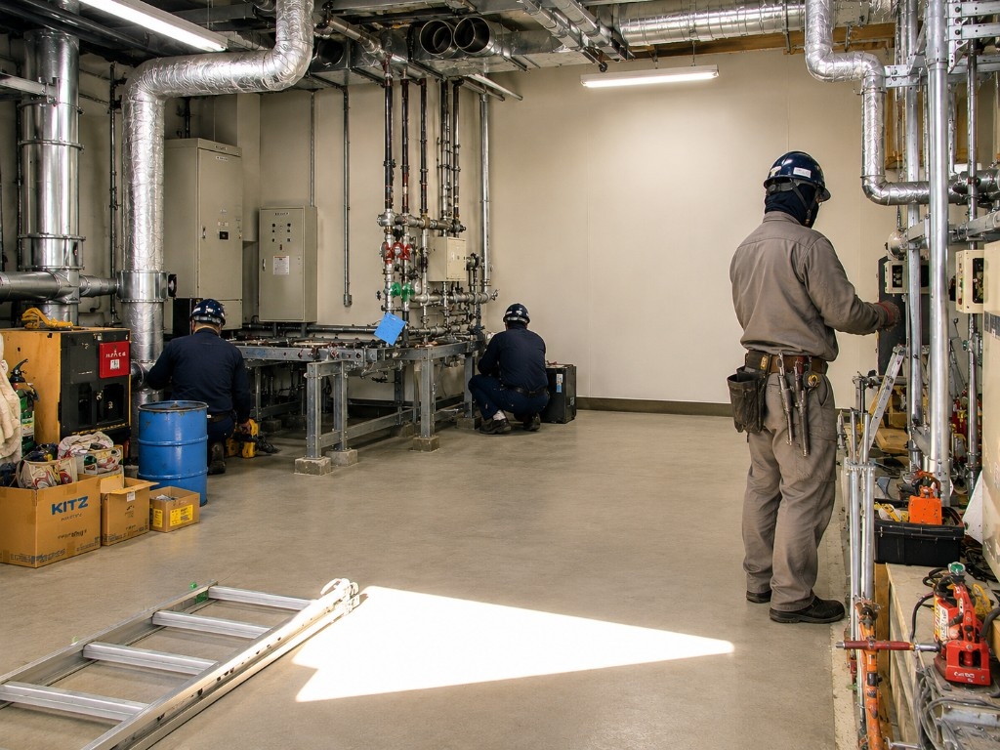
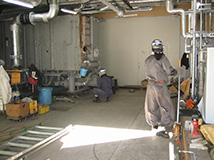

建物設備の老朽化や用途変更、省エネ化により不要となった空調・衛生・電気機器および設備を解体・撤去します。

事業概要
リニューアル工事に伴う既設備の撤去から、更新機器の搬入据付まで一連の流れで対応。周辺設備や建物への影響を考慮し、計画的な解体撤去を実施します。
主な対応内容
- 空調・衛生・電気設備の解体・撤去
- 老朽化設備・不要機器の取り外し
- 撤去に伴う搬出・揚重作業
- 更新工事に向けた既設備の解体計画

04
SERVICE
建物設備の老朽化や用途変更、省エネ化により不要となった空調・衛生・電気機器および設備を解体・撤去します。

リニューアル工事に伴う既設備の撤去から、更新機器の搬入据付まで一連の流れで対応。周辺設備や建物への影響を考慮し、計画的な解体撤去を実施します。